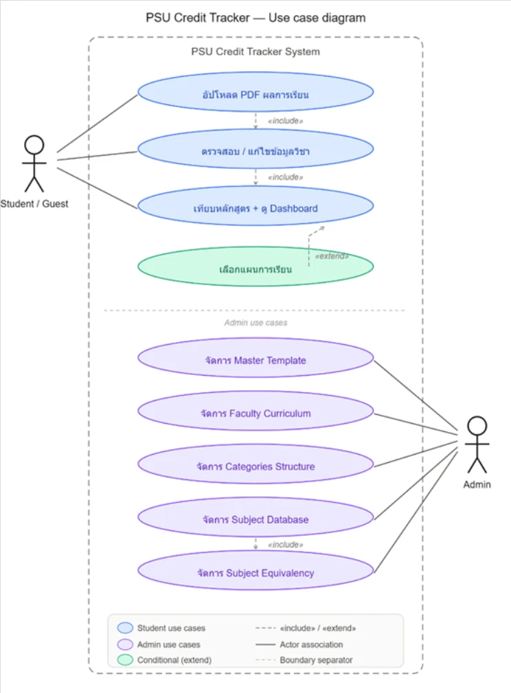
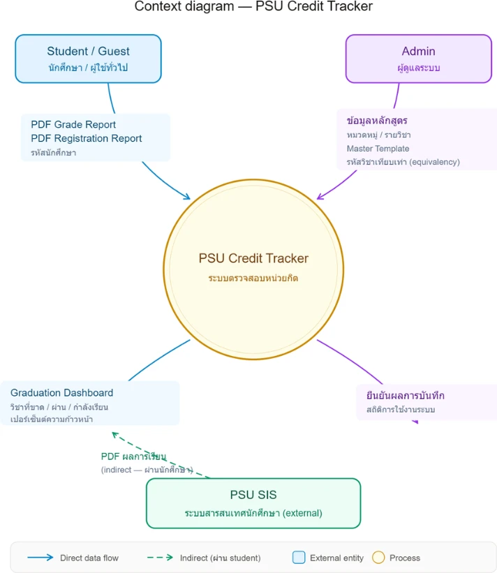
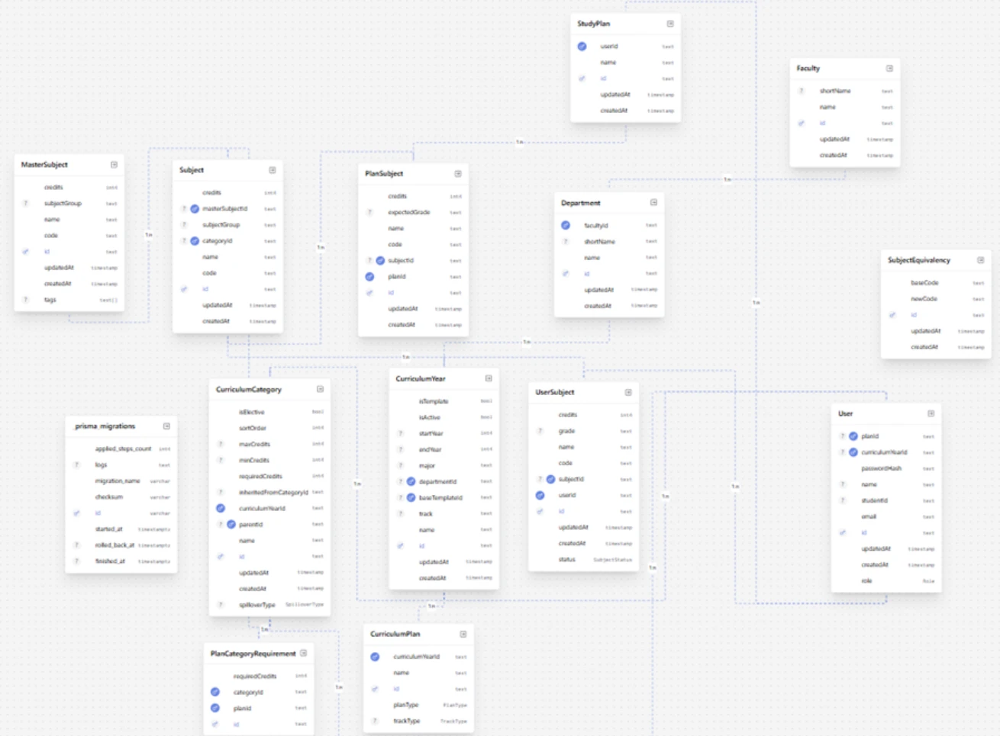
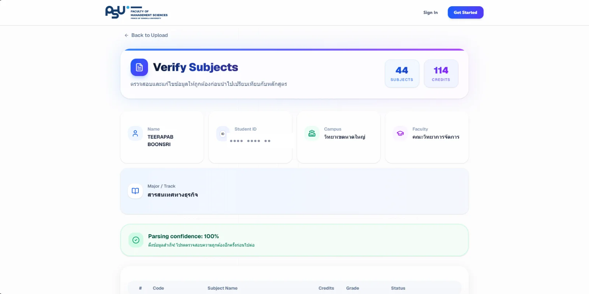
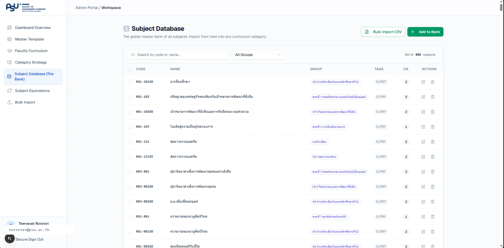
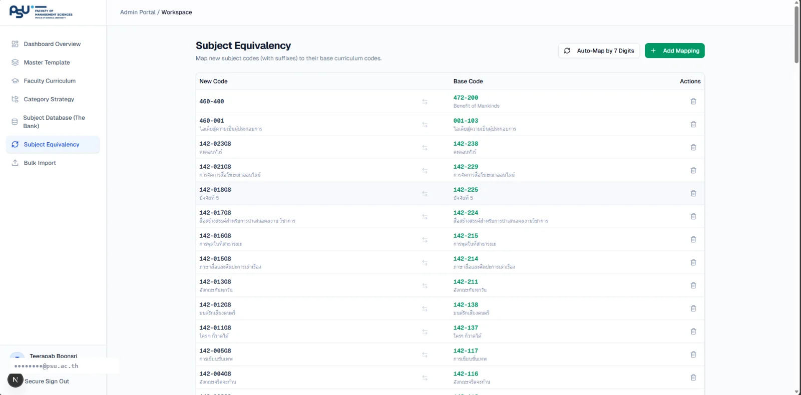
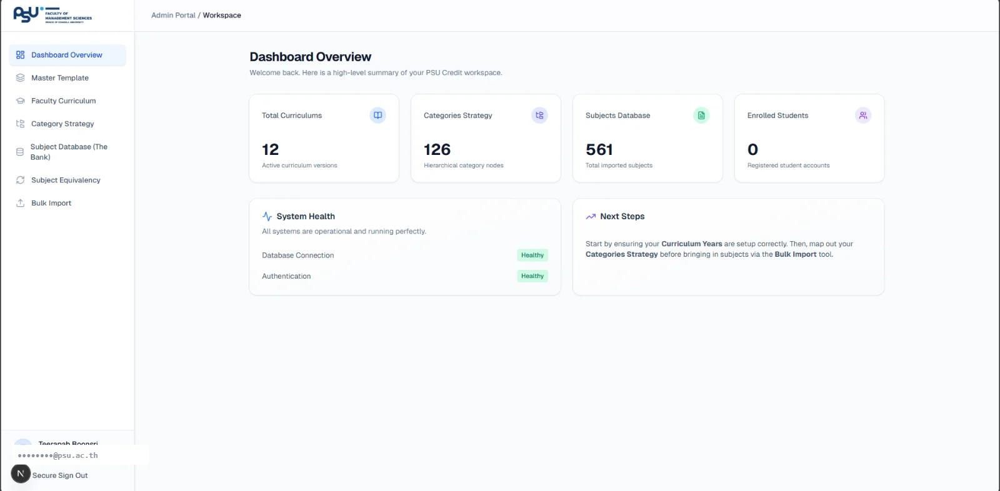
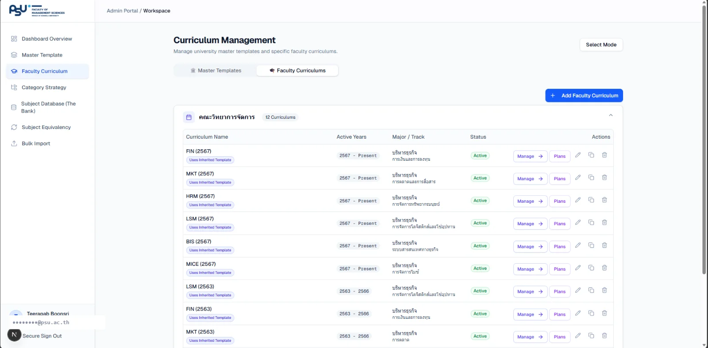

Case study · Course 477-303 BISA&D · Semester 2, 2025
A system that reads your transcript
and tells you what you still owe
FMS Credit Tracker — students upload their grade report and their registration slip as PDF files, the system pulls the text out into individual courses, then matches them against the faculty's curriculum structure by itself: which categories are complete, which are still short and by how many credits, instead of ticking boxes by hand in the curriculum table.

Next.js App Router
all designed by me
student side + admin side
across 87 files
Student and Admin
01 — The problem
The registrar tells you what grades you got, not whether you can graduate
This was a project for the Business Information Systems Analysis & Design course, done as a group — but the analysis, the design and the development were all mine. It started from a problem my friends and I ran into every single term.
The data and the rules live in different places
The registrar shows the courses you took and the grades you got, but the curriculum structure sits in a separate document. Students have to open both and compare them by hand.
General education is genuinely complicated
GENED has sub-categories, each with its own minimum credit requirement. Counting one category wrong makes the whole result wrong.
Course codes change between curriculum years
The same course can carry a different code in the old curriculum and the new one. A system that matches codes literally sees two unrelated courses.
Finding out near graduation is too late
If you only discover a missing category in the last term of your fourth year, there may be no term left to take it in. Seeing the whole picture early is worth more than checking at the end.
What the requirements gathering concluded — students do not need “somewhere to keep grades”, because the registrar already is that. What is missing is the interpretation: what do the grades I already have actually mean? So this system does not try to replace the registrar. It takes data from it and answers one question clearly — what is left?
02 — System design
Draw it to the end, then write the code
I started with the use cases and the context diagram so we could agree on who is allowed to do what, and where the boundary of the system sits, before going near the database detail.
Student
Upload PDF files · review what the system extracted · read the progress dashboard · simulate a study plan ahead of time
Admin
Manage curricula and credit categories · maintain the central course catalogue · map equivalent courses · bulk-import with CSV


A boundary decided at the very start — the system does not talk to the registrar's API directly, because that is university data students have no API-level right to. The realistic path is to let the owner of the data hand their own file to the system. That trades a lot of extra work on the text-extraction side, but it means the system can actually exist without waiting for anyone's permission.
03 — Database design
Three decisions that mean a new curriculum needs no code change
The curriculum structure changes every few years. Bake the rules into the code and the system dies with that edition of the curriculum. All three decisions below exist to keep the rules as data, not code.
Categories are a tree, not a flat list
The CurriculumCategory table references itself through parentId,
so a top-level category can nest sub-categories to any depth, and every level holds its
own minimum credit requirement. Adding a new sub-category later means adding a row, not
editing a condition in the code.
A central course catalogue, cloned into each curriculum
MasterSubject is a catalogue where every course code is unique system-wide.
When a new curriculum is created, the system clones courses out of the catalogue into
that curriculum's own Subject rows. The result: fix a course name in one
place, while older curricula keep whatever was true for them that year.
A separate table for equivalent courses
SubjectEquivalency pairs a new code with its base code, so the system knows
that a course which changed code still counts as the same course · when the faculty
renumbers again, an admin can add the new pair themselves from the admin screens.

CurriculumCategory and the separate
SubjectEquivalency table are the two decisions above, drawn.04 — The student side
Upload → review → see the result
Pulling text out of a PDF is never 100% accurate every time, so the system does not pretend it is. It says how confident it is and always has a person confirm first.
Upload
The student uploads the grade report and the registration slip as PDFs — both of which they can download from the registrar themselves.
The system extracts the text
The server reads the file with pdf-parse, then picks out course codes, course
names, credits and grades with regexes written against the real document format. It then
merges the two documents and assigns each row a
confidence score.
Review before confirming
Rows the system is unsure about are highlighted for correction first · the whole table is editable, because one wrong row throws off the credit count for an entire category.
Dashboard and plan simulation
Once confirmed, the system matches every course to a category in the curriculum and summarises how complete or how short each one is, with a mode for simulating what happens to the picture if you take a given course next term.



05 — The admin side
Whoever owns the curriculum has to be able to change it without calling a programmer
- Manage curricula — create, edit, and clone last year's curriculum as a starting point instead of retyping the whole thing every year
- Central course catalogue — add courses one at a time, or bulk-import from a CSV file when setting the system up for the first time
- Map equivalent courses — declare that a new code and an old code are the same course, so credit counting stays correct across curriculum editions
- Automatic matching — the system proposes the pairs that probably match based on the course codes, then leaves the admin to confirm; it never decides for them
- Set credit thresholds per category — the minimum credits for every category and sub-category are editable from the screen




06 — The stack
What I chose, and why
- Framework
- Next.js 16 (App Router) · React 19 · TypeScript
My first project written fully in TypeScript, after building the voting system in JavaScript. Having types helped a great deal while reworking the multi-level category structure. - Database
- PostgreSQL · Prisma 7
Self-referencing relations and hierarchical queries are straightforward here, and schema changes come with migrations. - Auth
- NextAuth 5 · bcryptjs
Student and Admin are separated at the middleware layer, not merely by hiding menu items in the UI. - Reading PDFs
- pdf-parse + regex
Patterns written against the university's real document format, with a confidence score for every row extracted. - UI
- Tailwind CSS 4 · shadcn/ui (Radix)
I chose Radix because correct accessible behaviour comes with it from the start, while the appearance stays entirely mine to control. - Everything else
- Zustand · Recharts · Framer Motion
Zustand holds state across the upload → review → results steps, a long flow where the user can go back at any point.
07 — Straight talk
Things worth saying plainly
- Status — a course project, developed until both flows work end to end, but not yet rolled out to the whole faculty
- It was a group of 10 — the analysis, the system design, the database design and all of the development were my work; the rest of the team handled documentation and the presentation
- Text extraction is still tied to the document format — if the university changes the look of the PDF, the regexes have to follow. That limit was known when I chose this path, and it is exactly why the review screen exists
- Next step — with permission to hit the registrar's API directly, the upload and review steps could disappear entirely